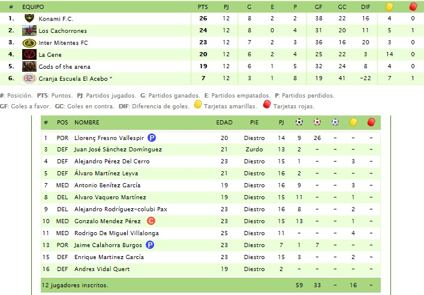

Clasificación y estadísticas

Final temporada 2015/2016
Último partido de la temporada
Foto fin temporada 2015/2016
Con el presi
El presi bajó al campo a felicitarnos por la victoria
Penalty tirado por Recluta
Antes del partido
Siempre juntos
Preparandonos el día antes del partido
Estudiando tácticas
Antes de jugarnos el pase a primera división
Estudiando tácticas
Partido antes de las vacaciones de navidad
Nos fuimos con vistoria 12-2 contra mayaray
Corner rematado por Recluta
Primer gol de la temporada y de falta directa
Gol Paca
Aquí empezó todo
 Después de ganar a chapó 10-0
Después de ganar a chapó 10-0
Foto plantilla
Temporada 2015/2016